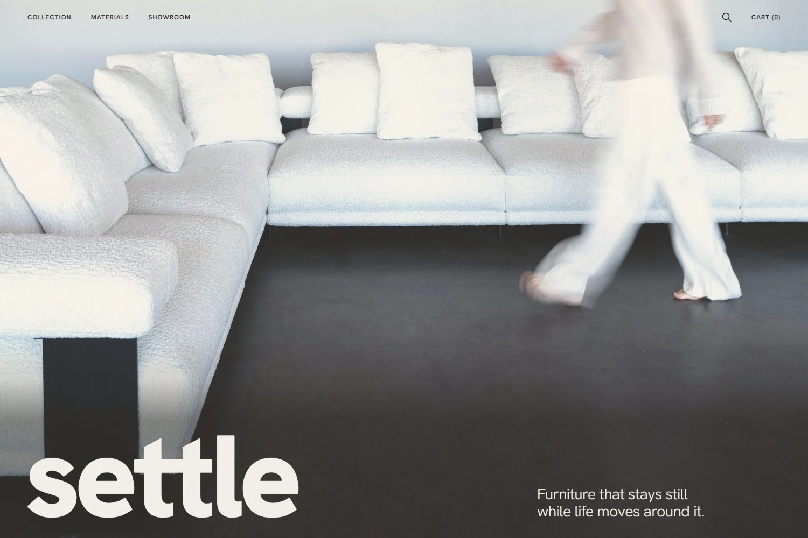
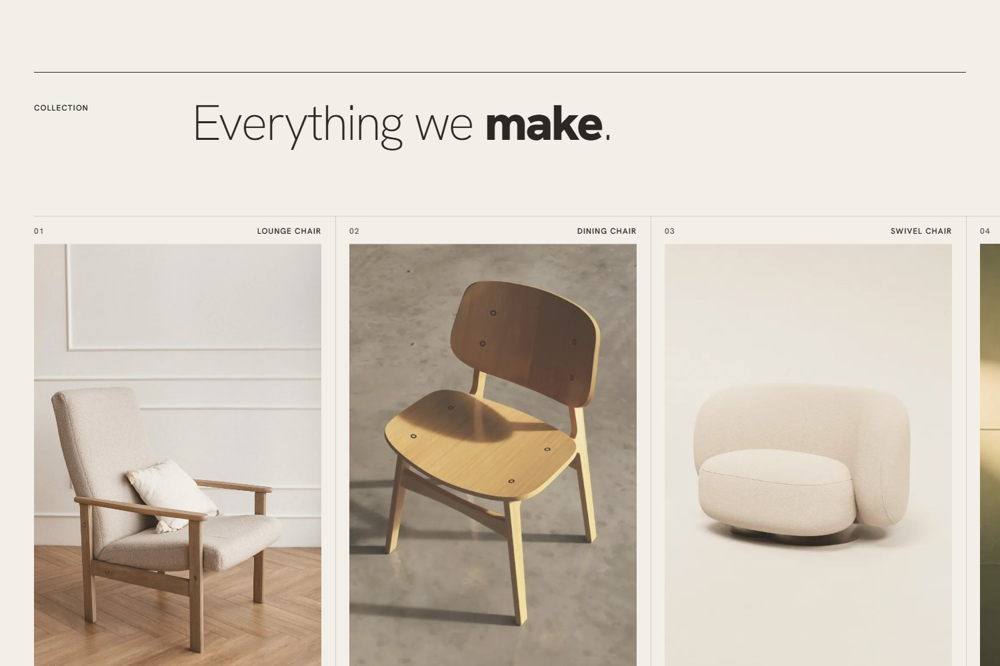
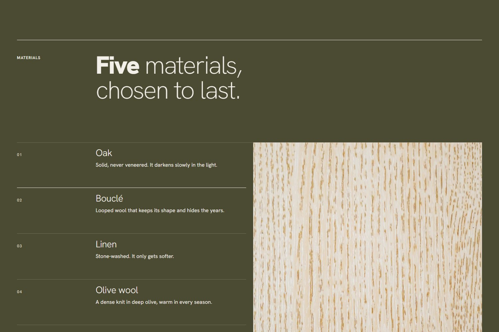
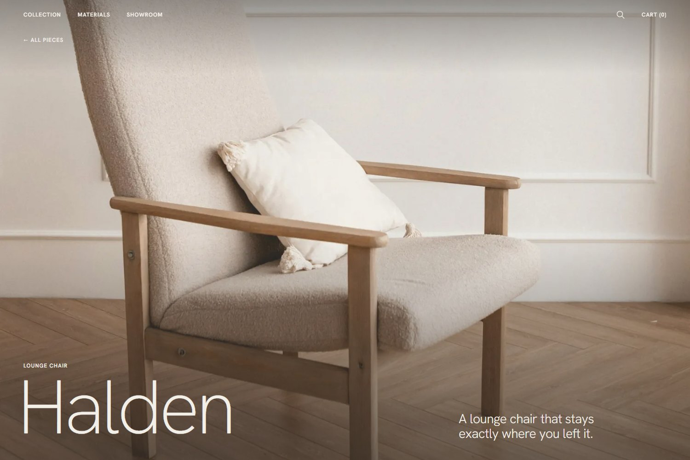
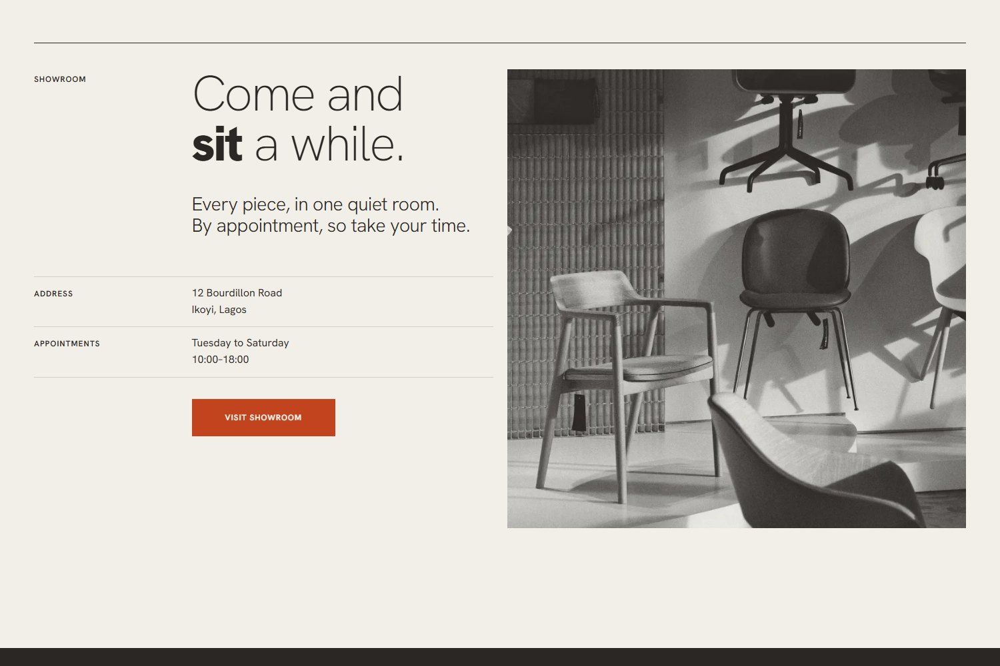

Furniture that stays still. While life moves.

img/work/settle.jpg — 1200×800 minimum.
- Design & build
- 2026
- Concept site · 3 page types
- Self-initiated concept
Settle is a self-initiated concept for a furniture studio in Lagos, designed and built end to end. The site is three page types rather than a single landing page: a landing page, an index of every piece, and a product page that takes the piece as a parameter so all six share one template instead of six near-identical files.
Plain HTML, CSS and JavaScript with no build step, published as static files. The photography is responsive at the file level — every image ships as WebP with a JPEG fallback at several widths, so a phone is never sent a desktop-sized photograph.
- Six pieces — halden, moss, turn, pause, weave and low — run through one product template rather than six separate pages.
- Every page has a static snapshot generated for it, so the design can be pulled back into Figma without rebuilding it by hand.
- Reveals are tuned to settle rather than announce themselves, matching what the furniture is meant to do.

img/work/settle-1.jpg — 1200×800
minimum.

img/work/settle-2.jpg — 1200×800
minimum.

img/work/settle-3.jpg — 1200×800
minimum.

img/work/settle-4.jpg — 1200×800
minimum.
The photography within the site is from Unsplash contributors, used under the Unsplash licence and credited in full in the project repository.